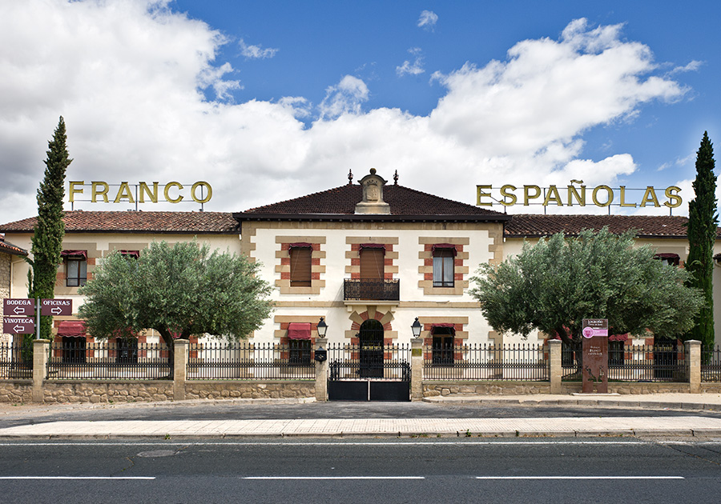

<!DOCTYPE html>
<html>
<head>
    <title>Basic map</title>
    <script src="js/leaflet.js"></script>
    <link rel="stylesheet" href="css/leaflet.css">
    <style>
        body {padding: 0; margin: 0;}

        html, body, #map {height: 100%; width: 100%;}

        .legend {width: 350px;
                font-size: 25px;
                color: #000000;
                font-family: "Open Sans", Helvetica, sans-serif;
                padding: 10px 15px;
                background-color: rgba(245,245,220,0.8) ;
                box-shadow: 100 100 100px rgba(0, 0, 0, 0.2);
                border-radius: 0px;
                border: 3px solid rgb(0, 0, 0);}
 
        .Imagen {display: flex;
                top: -16px;
                left: 300px;
                width: 936px;
                height: 300px;
                font-size: 0px;
                color: #000000;
                font-family: "Open Sans", Helvetica, sans-serif;
                padding: 0px 0px;
                background-color: rgba(245,245,220,0.8) ;
                box-shadow: 100 100 100px rgba(0, 0, 0, 0.2);
                border-radius: 0px;
                border: 3px solid rgb(0, 0, 0);
                flex-direction: row;}
        
        

        .popup {display: flex;
               flex-direction: column-reverse;
               align-items: center;}

                     
    </style>

</head>

<body>
    
        <div id="map"></div>

       <script>
        
        var ortofoto = L.tileLayer('https://services.arcgisonline.com/ArcGIS/rest/services/World_Imagery/MapServer/tile/{z}/{y}/{x}',),
            mapabase = L.tileLayer('https://services.arcgisonline.com/ArcGIS/rest/services/NatGeo_World_Map/MapServer/tile/{z}/{y}/{x}',);
        var map = L.map("map", {center: [42.5136802, -2.661061], zoom: 11, layers:[ortofoto,mapabase]});
        var baseMaps = {"Mapa Base": mapabase, "Fotografía Aerea": ortofoto};
        L.control.layers(baseMaps).addTo(map);
    
        letpnt1 = L.marker([42.462722, -2.444984]).addTo(map);
        letpnt2 = L.marker([42.553452, -2.584889]).addTo(map);
        letpnt3 = L.marker([42.543426, -2.784602]).addTo(map);
        letpnt4 = L.marker([42.576569, -2.849868]).addTo(map);
        letpnt5 = L.marker([42.481354, -2.642823]).addTo(map);
        letpnt6 = L.marker([42.468091, -2.561254]).addTo(map);

        letcircle1= L.circleMarker ([42.563506, -2.512082 - 0,001],{radius:20, color:"darkred", fillcolor:"redblack"}).addTo(map);
        letcircle2= L.circleMarker ([42.590939, -2.795681 - 0,001],{radius:20, color:"darkred", fillcolor:"redblack"}).addTo(map);
        letcircle3= L.circleMarker ([42.495983, -2.750733 - 0,001],{radius:20, color:"darkred", fillcolor:"redblack"}).addTo(map);

        letline7 = L.polyline([[42.462722, -2.444984], [42.563506, -2.512082]],{color: "yellow", weight: 3}).addTo(map);
        letline8 = L.polyline([[42.563506, -2.512082], [42.553452, -2.584889]],{color: "yellow", weight: 3}).addTo(map);
        letline9 = L.polyline([[42.553452, -2.584889], [42.590939, -2.795681]],{color: "yellow", weight: 3}).addTo(map);
        letline10 = L.polyline([[42.590939, -2.795681], [42.576569, -2.849868]],{color: "yellow", weight: 3}).addTo(map);
        letline11 = L.polyline([[42.543426, -2.784602], [42.495983, -2.750733]],{color: "yellow", weight: 3}).addTo(map);
        letline12 = L.polyline([[42.495983, -2.750733], [42.481354, -2.642823]],{color: "yellow", weight: 3}).addTo(map);

        letline1 = L.polyline([[42.462722, -2.444984], [42.553452, -2.584889]],{color: "darkred", weight: 5}).addTo(map);
        letline2 = L.polyline([[42.553452, -2.584889], [42.576569, -2.849868]],{color: "darkred", weight: 5}).addTo(map);
        letline3 = L.polyline([[42.576569, -2.849868], [42.543426, -2.784602]],{color: "darkred", weight: 5}).addTo(map);
        letline4 = L.polyline([[42.543426, -2.784602], [42.481354, -2.642823]],{color: "darkred", weight: 5}).addTo(map);
        letline5 = L.polyline([[42.481354, -2.642823], [42.468091, -2.561254]],{color: "darkred", weight: 5}).addTo(map);
        letline6 = L.polyline([[42.468091, -2.561254], [42.462722, -2.444984]],{color: "darkred", weight: 5}).addTo(map);
        
        
        let legend = L.control({position: "bottomright"});
        legend.onAdd = function() {
        let div = L.DomUtil.create("div", "legend");
        div.innerHTML = '<p><b> Ruta del vino por La Rioja Alavesa </b></p><hr>' +
                        '<H6> A continuación se muestra una ruta por los principales barrios bodegueros en La Rioja Alavesa.</H6>' +
                        '<H6> Nuestro viaje comienza en la Capital: Logroño, desde donde nos dirigiremos a las localidades de: Laguardia, Haro, Briones; Cenicero y Fuenmayor, hasta volver al punto de origen.</H6>'+
                        '<H6> Tambien se muestran tres posibles devios de la ruta original hacia los barrios bodegueros de Lanciego, La Bastida y San Asensio.</H6>';
        return div;};
        legend.addTo(map);
        
        let Imagen = L.control({position: "bottomleft"});
        Imagen.onAdd = function() {
        let div = L.DomUtil.create("div", "Imagen");
        div.innerHTML = ''
        + '';
        return div;};
        Imagen.addTo(map);

               letpnt1.bindPopup(
            `<div class="popup">
            Bodegas Franco Españolas
            
            <b>Logroño</b>
            </div>`);
        letpnt2.bindPopup(
            `<div class="popup">
            Bodegas Marques de Riscal
            
            <b>Laguardia</b>
            </div>`);
        letpnt3.bindPopup(
            `<div class="popup">
            Bodegas Dinastía Vivanco
            
            <b>Briones</b>
            </div>`);
        letpnt4.bindPopup(
            `<div class="popup">
            Bodegas de Ysios
            
            <b>Haro</b>
            </div>`);
        letpnt5.bindPopup(
            `<div class="popup">
            Bodegas de Páganos
            
            <b>Cenicero</b>
            </div>`);
        letpnt6.bindPopup(
            `<div class="popup">
            Bodegas Darien
            
            <b>Fuenmayor</b>
            </div>`);
        letcircle1.bindPopup(
            `<div class="popup">
            Barrio bodeguero de Lanciego
            </div>`);
        letcircle2.bindPopup(
            `<div class="popup">
            Barrio bodeguero de La Bastida
            </div>`);
        letcircle3.bindPopup(
            `<div class="popup">
            Barrio bodeguero de San Asensio
            </div>`);
        
    </script>

    
</body>

</html>

